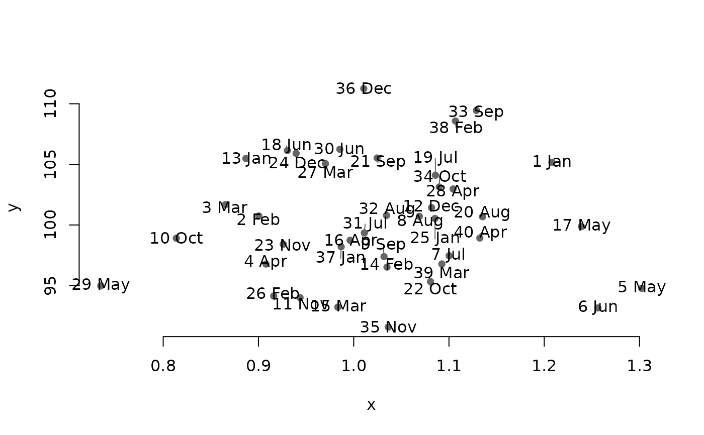

Jitter repel coordinates for plotting.
jit.repel.RdJitter repel coordinates for plotting.
Arguments
- x
X coordinates.
- y
Y coordinates.
- jitter.fact
Jitter factor. Numeric. Higher values will make for variable jittering. Default is 10
- jitteration
Number of jitter iterations to repeat. Higher number will make points further apart. Default is 200.
- min.dist
The minimum distance that points can be apart. Default is .5
Examples
#Make some random data on different scales
x<-rnorm(1:40,mean = 1,sd = 0.1)
y<-rnorm(1:40,mean = 100,sd = 5)
labs<-paste(1:40,month.abb) #Make some random point labels
new.coords<-jit.repel(x,y) #jitter new point label coordinates
#> [1] "Repelling..."
#> ||||||||||||||||||||||||||||||||||||||||||||||||||||||||||||||||||||||||||||||||||||||||||||||||||||||||||||||||||||||||||||||||||||||||||||||||||||||||||||||||||||||||||||||||||||||||||||||||||||||||
plot(x,y,pch=16,col="grey40",bty="n") #plot the points
arrows(x,y,new.coords[,1],new.coords[,2], #plot connecting lines to labels
length = 0,xpd=T,col="grey40")
text(new.coords,labels = labs,xpd=T) #add labels with the new point label coordinates
